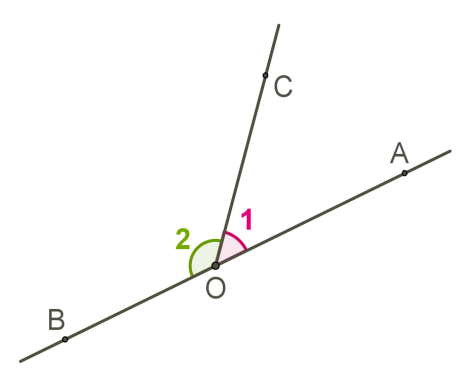
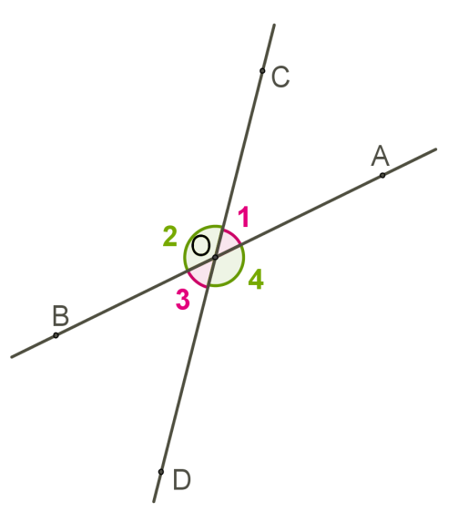
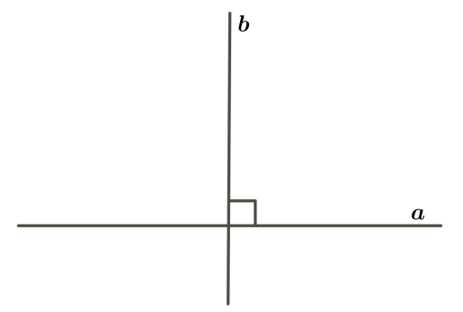
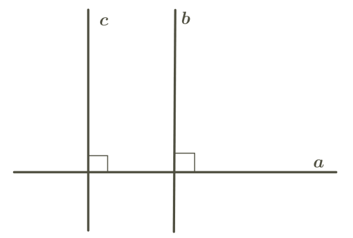

Два угла, у которых одна сторона общая, а две другие являются продолжением одна другой,
называются смежными.

Так как угол ∠AOB = 180° как развёрнутый угол, и луч
OC делит его на две части, то ∠1 + ∠2 = 180.
Сумма смежных углов равна 180°.
Два угла называются вертикальными, если обе стороны одного угла являются продолжениями
сторон
другого.
Если пересекаются две прямые, то образуются две пары вертикальных углов — ∠1,∠3 и ∠2,∠4.

∠1 + ∠2 = 180° и ∠1 + ∠4 = 180 по свойству смежных
углов, следовательно ∠2 = ∠4.
Также понятно, что ∠1 = ∠3.
Вертикальные углы равны.
Если один из вертикальных углов прямой (равен 90), то остальные углы тоже прямые.
Если две пересекающиеся прямые образуют четыре прямых угла, они называются
перпендикулярными.

Это записывают a⊥b.
Две прямые перпендикулярные к третьей не пересекаются.
